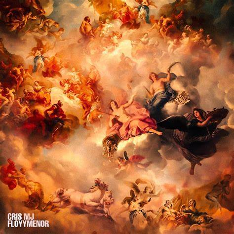

CRIS MJ
Christopher Andrés Álvarez García (La Serena, Coquimbo; 16 de septiembre de 2001), conocido artísticamente como Cris MJ, es un cantante y compositor chileno.
Algunos de sus albums son:

Partyson
Welcome to my world
MJ